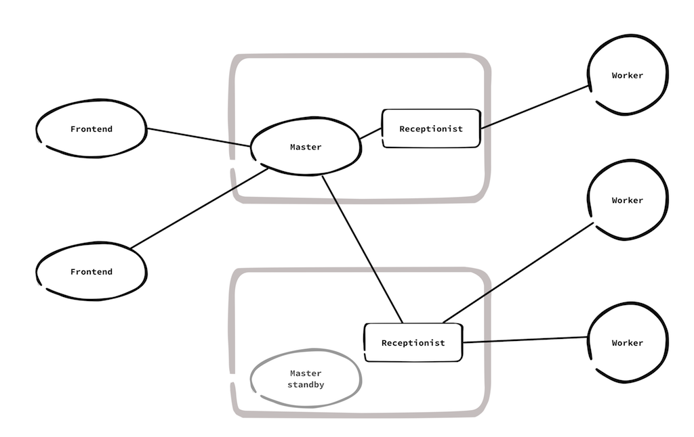

NOT READY - ONLY SOME NOTES
The design on Derek's http://letitcrash.com/post/29044669086/balancing-workload-across-nodes-with-akka-2
and adds how discovery and interaction can be done with cluster features.
General requirements:
- elastic addition/removal of frontend nodes
- elastic addition/removal of workers
- support many workers (~10000)
- work should not be lost, fail, or be aborted, when master node crashes

Interactions:
- master actor is singleton within nodes with role "backend"
- current active master actor runs on oldest node
- in case of crash, standby node starts new master actor
- master actor register itself in DistributedPubSubMediator
- worker registers to master via cluster client, receptionist proxy
- cluster client means that workers don't talk directly to master, and also don't have to know where the master is running
- worker re-registers periodically, which is good for
startup ordering, master fail over, switching receptionist
- ack not needed for register
- client submits work to frontend through REST API
- frontend sends work to master via DistributedPubSubMediator
- master receives work, stores change in eventsourced, replies with ack
- frontend retries until ack from master, thereafter OK to client
- master notifies some idle workers that there exists available work
- worker asks for work
- master sends work to worker, and keeps track of that worker is busy
- worker is expected to report progress, failure, or done
- done require ack from master
- if worker is silent (timeout) the work is considered failed, and is placed in queue again
- master updates work status, as domain event in eventsourced
- the eventsourced state of work status is used when master standby is started
- work can start from one master and complete with another master instance
- work status, progress, and result is also published to frontend read view
Possible Extensions:
- multiple masters, use several roles, one per shard, "backend-shard1", "backend-shard2"...
everything else same as described above, frontend sends work to master via DistributedPubSubMediator.Send means that one work item is sent to only one master